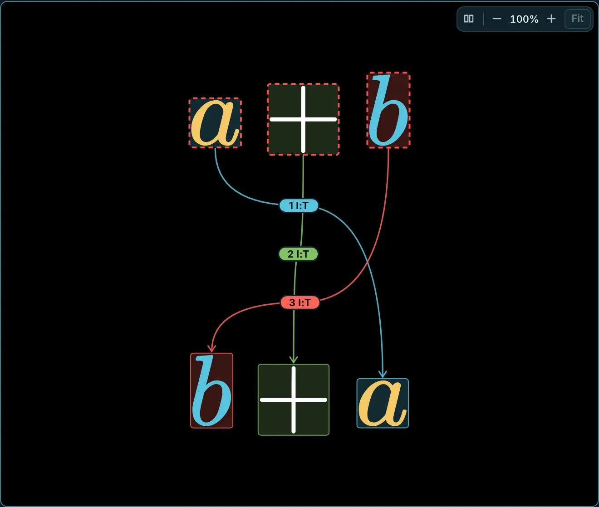
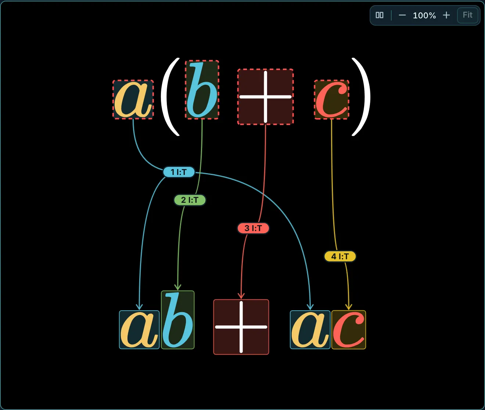
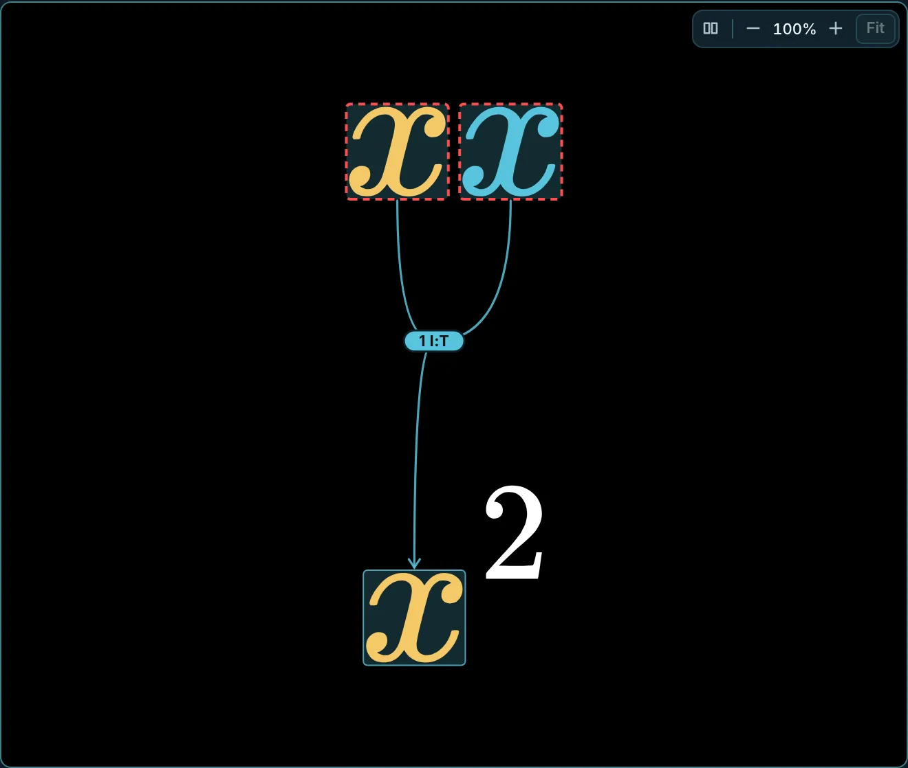
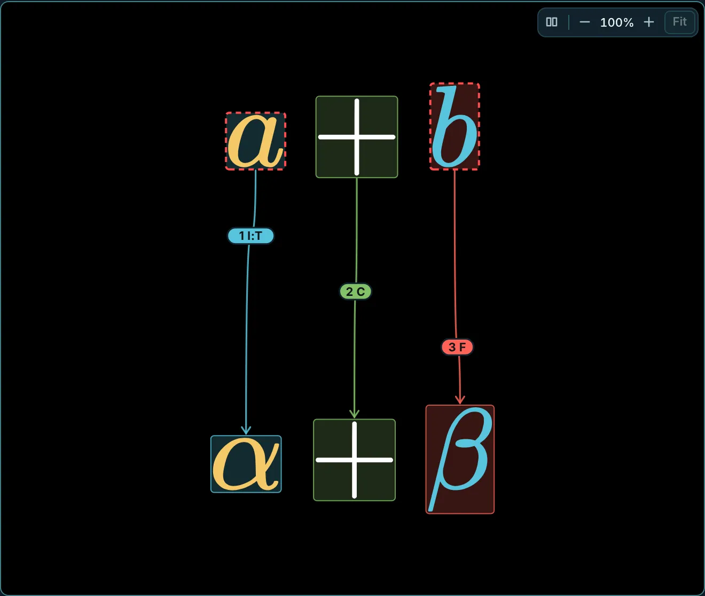
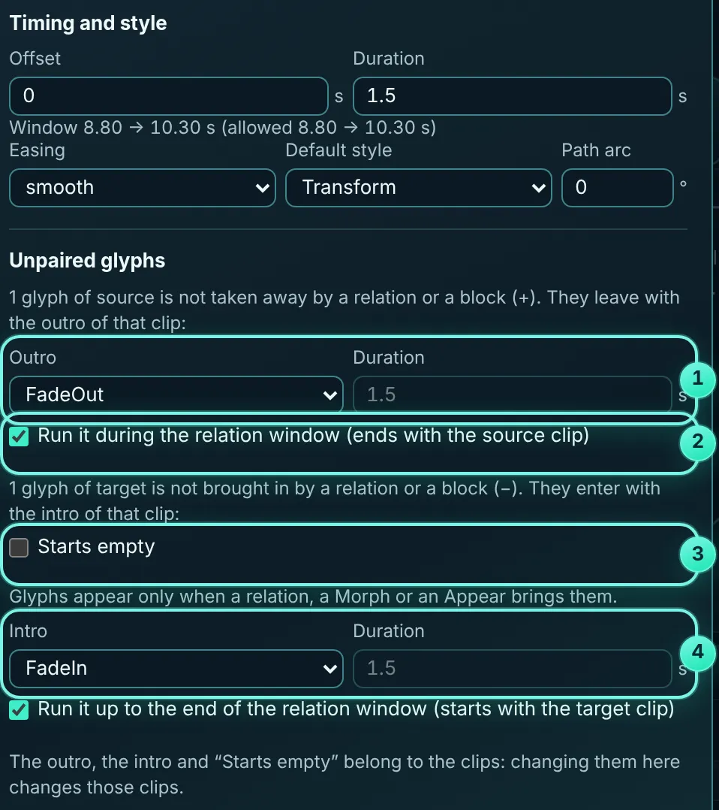
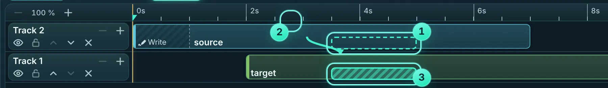
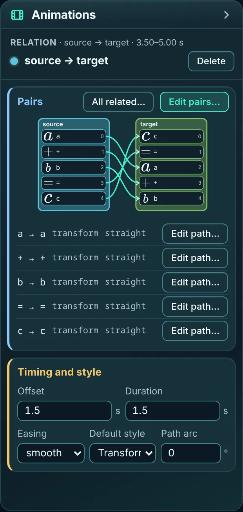
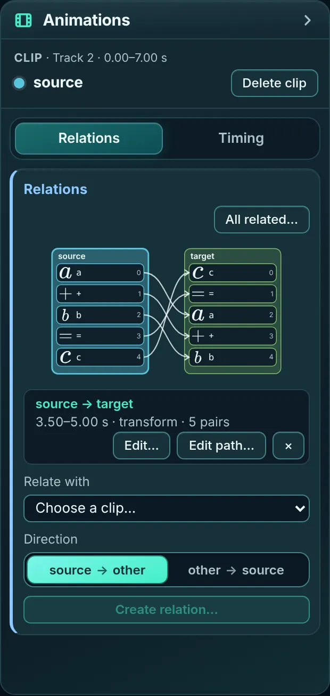
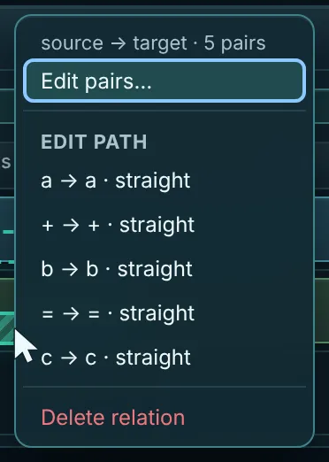
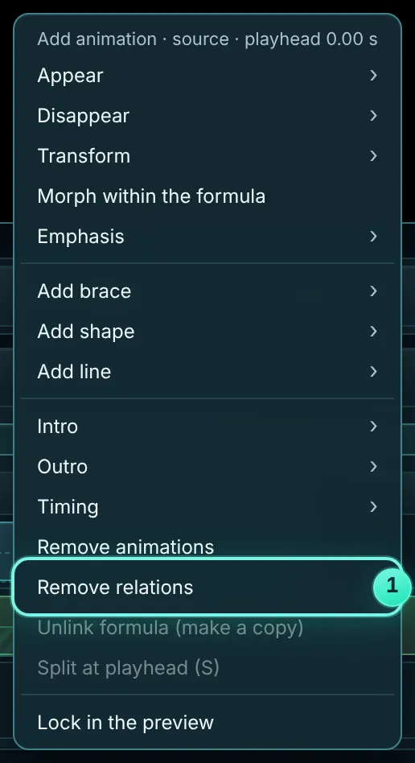

How relations work
A relation turns one formula into the next. It links two clips and says, glyph by glyph, where each glyph goes, how it travels and when. Every animation on this page plays in your browser, and four small tools let you try the ideas yourself.
The idea
On the timeline a formula is a clip. A relation links two clips: the source, which is on screen first, and the target, which takes over. While the relation runs, the glyphs of the source move to their places in the target.
A relation is made of three things.
- Pairs. Each pair says which glyphs of the source become which glyphs of the target. The swap above has three, one for each glyph.
- A style for each pair: how its glyphs get there. They move, they move as copies, they fade into each other, or a copy of them fades.
- A window. The stretch of the timeline during which the transformation runs.
The two clips must be on different tracks, and they must overlap in time: the source has to be on screen (after its intro) while the target is already there (before its outro). The window lies inside that overlap.
A clip can be in several relations. The target of one and the source of the next make a chain, the way a derivation goes from line to line (the quadratic formula tutorial chains six). A clip can also be the source of several relations, to feed several formulas.
Pairs
A pair names some glyphs of the source and some glyphs of the target, and says that the first become the second. The editor numbers the glyphs of every formula (0, 1, 2… in the order the renderer gives them) and keeps the pairs by those numbers. You make pairs in the relation editor, by clicking glyphs. Here you only look at what they mean.
One-to-one
The simplest pair joins one glyph to one glyph. The glyph goes to its place, and its shape and its colour change into those of its partner. The swap above has three of them.

I:T
means Transform, inherited from the relation). The red dashes round the sources say that
their pairs consume them (below).One-to-many
A glyph of the source can go to several glyphs of the target in one pair. It splits.

Manim makes it work by padding the shorter side with invisible copies of its glyphs until both sides have the same number. The second a is such a copy: it starts invisible, on top of the first, and shows as it moves away. The exported Python shows the pair as one animation of two groups:
ReplacementTransform(VGroup(before_g[0]), VGroup(after_g[0], after_g[3])),Many-to-one
Several glyphs of the source can go to one glyph of the target. They merge.

xx link to the x of x², through one
badge. The 2 belongs to no pair.A glyph of the target arrives through one pair only, so the sources of this pair share it. How they reach it is a choice, and the next section shows it.
Several sources, one target: how they arrive
A pair with several sources and one target has an extra choice in the pair list,
Sources. It decides how the sources beyond the first reach the
target. The three players below run the same relation, xx into x²,
with each choice.
Play the three together, on the same pair, and compare how the second x reaches the target:
| Choice | What happens | In the exported Python |
|---|---|---|
| Separate | Each source makes its own transform onto the target. All of them arrive. | ReplacementTransform(source_g[0], target_g[0]),
Transform(source_g[1], target_g[0], remover=True), |
| Merge (Manim) | Manim aligns the group of sources with the group of targets: the first source becomes the target, and the others fade into it. | ReplacementTransform(VGroup(source_2_g[0], source_2_g[1]), VGroup(target_2_g[0])), |
| Copies | The first source, the principal, transforms. Each other source sends a copy and stays. | ReplacementTransform(source_3_g[0], target_3_g[0]),
Transform(source_3_g[1].copy(), target_3_g[0], remover=True), |
The editor shows which source is the principal (Principal: x (0)), and keeps
it when the glyphs are renumbered. In a Transform or Fade pair, Separate
and Merge (Manim) consume every source; Copies
consumes only the principal. With Copies the principal plays the
style of the pair, and the other sources send a plain copy, whatever that style.
What a pair cannot do
- A glyph of the target arrives through one pair only.
- A glyph of the source is consumed by one pair only: once it has turned into other glyphs it is gone, and another pair can only copy it. The relation editor outlines such a source in red dashes. To send one glyph to two places, put both places in the same pair (a split), or make its pairs Copy or Fade copy: a copied glyph stays, and can be copied again.
- A glyph that was consumed cannot come back as the target of a later relation, and a source has to have arrived: a glyph that another relation is still bringing in cannot be a source yet.
These rules count over the whole project, not inside one relation: two relations into the same clip cannot bring the same glyph, whichever clips they come from. The relation editor refuses the links it can tell are wrong, dims the glyphs another relation has taken, and lists the other problems before you save. The relation editor shows them.
Try it: link the glyphs yourself
This is a light version of the editor, built on the example of the one-to-many section. Click a glyph of the source and a glyph of the target to link them, then press Play to see what your pairs do.
Styles
The style of a pair says how its glyphs get from the source to the target. The relation has a Default style, and each pair either follows it (Inherit) or has a style of its own.
| Style | What the glyphs do | The source glyphs | In Manim |
|---|---|---|---|
| Transform | Move and change shape into the target glyphs. | Consumed: gone afterwards. | ReplacementTransform(source_g[0], target_g[0]) |
| Copy (source stays) | A copy of each glyph moves and changes shape into the target glyph. | Stay where they are, until the outro of the source clip. | ManimCE: ReplacementTransform(source_2_g[0].copy(), target_2_g[0])ManimGL: TransformFromCopy(source_2_g[0], target_2_g[0]) |
| Fade transform | The source fades out while it stretches onto the box of the target, and the target fades in from the box of the source. The shapes are not morphed into each other. | Consumed. | FadeTransform(source_3_g[0], target_3_g[0]) |
| Fade copy (source stays) | A copy of each glyph fades out while it stretches onto the box of the target, and the target fades in. | Stay where they are, until the outro of the source clip. | FadeTransform(source_4_g[0].copy(), target_4_g[0]) |
Here is the same pair of formulas, a + b above and α + β below,
with each style in turn, and then with three of them in a single relation.

I:T is Transform inherited from the relation, C is Copy and
F is Fade transform; a Fade copy reads FC. The a and the
b, which their pairs consume, are outlined in red dashes; the plus sign, copied, is
not.Use Copy to repeat a glyph or a term somewhere else without losing the original. Use Fade transform when two glyphs have nothing in common: a morph between unrelated shapes looks strange, a fade does not. Use Fade copy when the source must stay and the two glyphs have nothing in common to morph. Try the four on a relation of your own:
Glyphs that belong to no pair
Not every glyph has a partner. The glyphs of the source that no pair consumes leave, and the glyphs of the target that no pair brings arrive. They do it with the animations of their clips:
- the glyphs of the source that no pair takes leave with the outro of the source clip;
- the glyphs of the target that no pair brings arrive with the intro of the target clip.
A glyph that a block of its clip takes care of is the block's: one that a Disappear or a Morph block of the source takes away before the outro, or one that an Appear or a Morph block of the target brings in. The outro and the intro leave it alone, and the relation editor does not count it with them.
In the example below, a + b = c becomes a = c − b. The plus sign
belongs to no pair and fades out; the minus sign belongs to none and fades in. The relation
editor counts them in the line over the drawing, for example
4 linked pairs · 1 glyph leaves · 1 glyph arrives.

Choose another animation in the lists (Unwrite, ShrinkToCenter, Write, GrowFromCenter…), or None (disappear) and None (appear) so that the glyphs vanish or show up at once. The outro and the intro belong to the clips: changing them here changes those clips.
The outro of a clip sits at its end. If the source clip goes on after the window, its unpaired glyphs stay until the outro begins. Below, the clip goes on for almost three seconds after the window: the plus sign hangs over the equals sign until it fades.
Two things fix it. Shorten the source clip so that it ends with the window, or tick Run it during the relation window (ends with the source clip): the outro then starts with the window and ends with the clip. Run it up to the end of the relation window (starts with the target clip) does the same for the intro of the target.
Only what the pairs bring: a target that starts empty
Sometimes the glyphs of the target that no pair brings should not arrive at all, or not yet.
Below, a = b becomes a² = b², and no pair brings the two exponents.
With an intro of None (appear) they show up at once, when the target
clip starts, before anything has moved:
Tick Starts empty for the target, and no glyph of that clip comes in with its intro. Each glyph appears only when something brings it: a pair of a relation, a Morph block of the clip, or an Appear block. A glyph nothing brings never shows. This is what a Morph block does inside one formula, between two clips.
The box is in two places, and both set the same thing on the target clip:
- in the relation editor, on the Animation tab, under Unpaired glyphs, for the target of the relation;
- in the Animations panel, on the Timing tab of the clip, at the top of its Intro section.
With the box ticked, the line over the drawing counts those glyphs as staying out, for
example 3 linked pairs · 0 glyphs leave · 2 glyphs stay out. The intro of the
clip keeps its animation and its time but has nothing to animate, so its fields in the editor
wait. To bring a glyph in later, add an Appear block to the target clip and choose the glyph:
Hidden at start, in the block’s glyph picker, picks every glyph of a
clip that starts empty.
Timing
The window of a relation is the stretch of time in which its glyphs move. It is counted from the start of the target clip: the Offset is how long after the target starts the window opens, and the Duration is how long it lasts.
The window has to lie inside the overlap of the clips: after the intro of the source, and
before the end of the source; after the start of the target, and before its outro. The Animation
tab of the editor says it in words, for example
Window 3.50 → 5.00 s (allowed 2.00 → 7.00 s).
A new relation is made where the playhead is. When you ask
for one, its window starts at the yellow line of the timeline, one second long or as long as
the clips leave after it. When no window fits there, because the playhead is outside the
overlap or too close to its end, the window starts as soon as both clips allow, and the
Animation tab says so under the window: No window fits at the playhead (0.00 s): the
two clips allow one within 2.00–7.00 s. It starts at 2.00 s instead.
With a region marked on the timeline’s ruler, the window of a new relation is the region instead, wherever the playhead is. When the two clips do not allow a window all along the region, no relation is made, and the editor says why.
Drag the handles below to move the window. The scene plays with the timing you choose.
On the timeline
A relation is drawn over the two clips: a band on the source clip and a band on the target clip mark the window, and an arrow joins the two clips. The relations of the selected clips are drawn in full; the others are faint. Click an arrow or a band to select the relation. A relation with an error is drawn in red, the edges of its bands and its arrow, and one with only warnings in amber; select it to read them at the end of the Animations panel, under Problems or Warnings.

Drag the band to move the window, and its edges to change its length. A readout above the band gives the start, the end and the length while you drag. With Snap on, the window sticks to the ticks of the ruler, to the playhead, and to the edges of the blocks, the intros, the outros and the relation windows of the two clips; hold Shift to move freely. The window stops where it would leave the overlap, and where it would clash with an animation block or another relation on the same glyphs.
The window follows the clips. The offset counts from the start of the target, so the window moves with the target clip when you move it. When you move or trim a clip so that the overlap shrinks, the window is shifted and then shortened to stay inside it. A relation with a clip on a locked track is the exception: it is not changed, so its window stays where it plays, and a move or a trim of its other clip stops where the window would no longer fit (The timeline).
The same numbers are in two panels. Select the relation and the Animations panel shows them,
with the pairs; the Animation tab of the relation editor has them too.
Easing is the rate function of the transformation: how its speed changes
between the start and the end of the window. It is smooth unless you change it.

More than once between the same two clips
A formula does not have to turn into another all at once. Two clips can have several
relations: the same source and the same target, each relation with its own pairs, its
own window and its own style. Below, a first relation takes the c and the equals
sign; a moment later a second one, between the same two clips, takes the rest. The target
starts empty, so it is made of what the two relations bring.
The rules of the pairs are what keeps such relations apart. Each glyph of the target arrives through one pair, and each glyph of the source is consumed by one, whichever relation the pair belongs to. So their windows can follow each other, as above, or even overlap, as long as they move different glyphs.
The Default style of a relation decides what its pairs without a style of their own consume, so changing it can break those rules: a pair that copied a source, made a Transform, would consume a glyph another relation consumes already. A default style that would give the project such an error is not set, and the notice Default style not changed says why. Give the pairs that clash a style of their own in Edit pairs…, or keep the default style.
To make the second one, ask for a relation between the two clips again, from the
Relations tab or with a link port. Because they are related already, a
menu asks what you mean: Edit relation 1…, or
Add another relation…. Its window starts
at the playhead, or where the last one of theirs ends when no
window fits there.
The relation editor shows it. The relations
of two clips are numbered by when they play, the first on the timeline being 1, and the
number tells them apart where the names of the formulas cannot: Relation 2 of 2: source → target in the title
of the editor, 2 of 2 in the list of the Relations tab.
Path arc
Glyphs move in straight lines unless the relation says otherwise. Path arc
bends the lines into arcs. It is a number of degrees, Manim’s path_arc: 0 is a
straight line, and the bigger the number, the rounder the arc, up to a full turn, 360°, either
way.
The sign decides the side. A glyph that moves to the right dips below its straight line with a positive arc, and goes over the top with a negative one. Below, the same swap three times: with an arc of 0°, of 90° and of −90°.
The arc belongs to the relation, so every pair follows it. To shape the path of one pair, draw it by hand: custom paths explains how.
Finding, editing and removing relations
The Relations tab of the Animations panel lists the relations of the selected clip, with a diagram of the two formulas and their links. Edit… opens the relation editor, Edit path… goes to the path of a pair, and × deletes the relation. All related… shows every relation connected to the clip, as one chain. The form under the list makes a new relation, or, between two clips that are related already, asks whether to edit one of theirs or add another: the relation editor tells how. A relation is between formulas and texts: a brace, a shape or a line is one piece, and its clip has no Relations tab and no link port.
A project made with an earlier version may still hold a relation with a brace, a shape or a line on one side. It plays and exports as it is, but it cannot be edited: its band is drawn in amber, its warning says what the object is, Edit pairs… and Edit path… are greyed out with the reason in their tooltip, and a drag of its band leaves it where it is. Delete relation, in the menu of its band, removes it.

Right-click the band of a relation on the timeline for its menu: Edit pairs…; under Edit path, each of its pairs (with more than five, one entry, Choose a pair…, opens a list of them); and Delete relation.

You can remove a relation in four ways:
- select it and press Delete;
- press Delete in its panel, or × in the list of the clip;
- choose Delete relation in the menu of its band;
- right-click a clip and choose Remove relations: it takes off every relation of the clip, as source or as target, and its Morph blocks.

In the exported Python
The exported scene plays a relation with a self.play(…) over its window, one animation for
each pair. The glyphs that belong to no pair leave or arrive in that call when their outro or intro
runs during the window, as in the scene below; anything that starts or ends inside the window cuts the
play into slices (_Part). This is the scene of the one-to-many example, as the editor
exports it:
The preview and the export agree: what you see in the player is what Manim renders. The page The generated Python explains the rest of the scene.
The examples of this page
Download a project and open it with File ▸ Open…, then Other file… in the dialog that opens (Projects explains it), to take it apart: select a relation, open its editor, and change a pair.
Where to go next
- The relation editor: how to link glyphs, set the styles and the timing, and save.
- Previewing a transformation: watch it before you save it.
- Custom paths: the path of one pair, drawn by hand.
- Transformation recipes: common moves of algebra, ready to copy.
- Transforming one formula into another: your first relation, step by step.